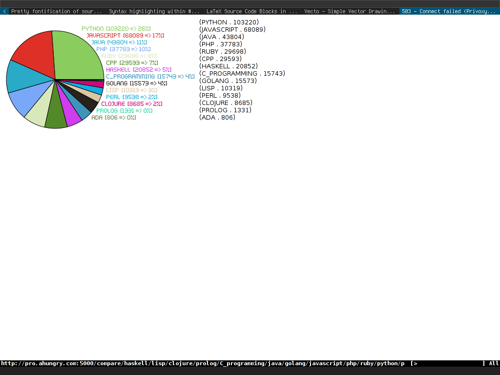

本ページは、ahungryさんの許可を得て、日本語訳を公開しています。
元記事は、次のリンクからご参照ください。
Writing a Common Lisp Web App in caveman2
以下のことを想定します：
今回webアプリを開発するために、caveman2と呼ばれる素晴らしいwebフレームワークを使います。
基本的なアイデアは、作業が全てが終わった時、Unixデーモンのような頑丈なwebアプリを走らせることです。 これは多くのweb系でない言語においては共通していますが、Web系の言語やPHPのようなスクリプト言語では滅多にありません 。
このアプリは、自分で作るwebサーバーを通してリクエストに応答します。（小さなApacheだと考えてください）
もしこのチュートリアルで迷ったら、完全なコードをhttps://github.com/ahungry/language-popularityで確認できます。 githubのページで個別のファイルを読んでもいいですし、レポジトリをforkしてもらっても構いません。 (ただし、~/quicklisp/local-projectsではなく、~/src/lispを用いていることに気をつけてください)
私のサーバー上で遊んでもらっても構いません。 手作業でURLを変えてみて、何が起こるのかを試してみてください。 URLでcompare/以降を手作業で変更することで表示結果がかわります。
http://lang-pop.ahungry.com/compare/lisp/haskell/prolog
http://lang-pop.ahungry.com/compare/lisp/haskell/scala
http://lang-pop.ahungry.com/compare/lisp/scheme/shen
まず、REPLを開いて、caveman2をloadしてください。
REPLでは次のように打ち込んでください:
(ql:quickload :caveman2) (caveman2:make-project "~/quicklisp/local-projects/language-popularity" :author "Your Name" :email "Your Email") (ql:quickload :language-popularity) (language-popularity:start :port 5000)
make-project関数を呼び出したディレクトリにcaveman2アプリのひな型が作成され、 5000番ポートにwebサーバーが起動します。
ブラウザ上でhttp://localhost:5000にアクセスする ことで、アプリが動いていることを確認できます。
そこに表示されるwelcomeメッセージや、リンク先のcaveman2に関するドキュメントを読むことをお勧めします。
さて、デフォルトのページはよくできたものでしたが、もう少し夢中になれるものを作っていきましょう。
これからファイル群を参照する時は、前の段階で作ったディレクトリを、(~/quicklisp/local-projects/language-popularity)で見つけることができることを想定しています。 その場所にあるファイル群に言及しながら進めます。
では、進めて行きましょう。src/web.lispを開いて、デフォルトのルートである`(defroute "/" ()…'の下に、次のように付け足してください。
(defroute "/compare/*" (&key splat) (format nil "We saw this in the URL: ~a" (car splat)))
EmacsでC-c C-cと押してください。（あなたは今、Emacsを使っていますよね？） そうすることで、起動中のSLIMEのインスタンスに、新しいルーティングをコンパイルして送ります。
うまくいかない場合、エディターのslime/swankを使う必要があるでしょう。 もしくはCommon Lispの処理系を再起動して、プロジェクトをquickloadでもう一度読み込む必要があるでしょう。
あなたが新たに加えたルーティングを試すために、http://localhost:5000/compare/haskell/lispを開いてください。
どのようにルーティングがワイルドカードにマッチして、*のマッチを抜き出し、それをsplat変数に保存したのかに注目してください。
このプロジェクトの名前が「言語の人気」であり、また独自のルーティング名からも推測されたかもしれませんが、 私たちは２つ以上の言語が「人気」という観点から、どのように互いに競り合っているか確認します。それぞれがredditで何人の購読者をもっているかを「人気」とします。
私たちは、cavemann2のフレームワークで少しセットアップをします。 どういうわけか、caveman2はsrc/model.lispをプロジェクトの雛形として作らない。 src/db.lispはありますが、それはデータベースのセットアップに関連するファイルです。
新しくsrc/model.lispを作り、以下をつけ加えてください:
(in-package :cl-user) (defpackage language-popularity.model (:use :cl :cl-json :drakma :vecto :md5 :split-sequence) (:import-from :language-popularity.config :config) (:export :get-language-sub-stats :pie-chart)) (in-package :language-popularity.model)
それぞれのS式でC-x C-cを押しながら進めると、起動中のREPLインスタンスに、コンパイルされたコードが送られる。(全てを読み込んでもいいです)
では、全てが正しく読み込みされたことを確認するために、language-popularity.asdも更新しましょう。 :componentsの箇所を見つけてください。
:components ((:file "main" :depends-on ("config" "view" "db")) (:file "web" :depends-on ("model" "view")) (:file "model" :depends-on ("config")) (:file "view" :depends-on ("config")) (:file "db" :depends-on ("config"))
modelに関する行を足し、webの行にmodelの依存関係も足しました。
必ず、modelをsrc/web.lispにも付け足してください：
(in-package :cl-user) (defpackage language-popularity.web (:use :cl :caveman2 :language-popularity.config :language-popularity.view :language-popularity.db :language-popularity.model :datafly :sxql :split-sequence :md5) (:export :*web*)) (in-package :language-popularity.web)
ゆとりをもって進めるために、サードパーティーのライブラリを利用します。全て、Quicklisp経由で利用可能です。
直接、次のように打ち込んでもいいですし:
(ql:quickload :library-name-here)
anguage-popularity.asdのファイルを開いて、defpackageの:useの箇所に付け足してもいいです。
ここで次ようなlanguage-popularity.asdファイルをもつべきです。
:sxql ;; for other tasks :drakma :cl-json :split-sequence :vecto :md5)
そして、src/model.lisp内のdefpackageは、次のようになります:
(defpackage language-popularity.model (:use :cl :cl-json :drakma :vecto :md5 :split-sequence) (:import-from :language-popularity.config :config) (:export :get-language-sub-stats :pie-chart))
pie-chart関数と:vectoが後にくることは無視してください。今の所、代わりの関数を、Languageの型クラスのための基本的なクラス構想と一緒に、src/model.lispに付け加えておきましょう。Common Lispでのクラスは、CLOSと呼ばれる仕組みで実現されています。CLOSは素晴らしいものですが、ここでは、複数の値を簡単に保存し参照するための方法として使います。
(defclass Language () ((Subscribers :accessor subs :initarg :subs :initform 0) (Last-Updated :accessor last-updated :initarg :last-updated :initform 0) (About :accessor about :initarg :about :initform "Some details about the language.")) (:documentation "Language stats and details")) (defun pie-chart (slices) slices)
さて次は、次の目的を果たす関数が必要です:
次にこれを加えてください（別の方法を伝えるまでは、まだsrc/model.lispに書いてください。）
(defun char-vector-to-string (v) (format nil "~{~a~}" (mapcar #'code-char (coerce v 'list)))) (defun remote-json-request (uri) "Pull in remote JSON. Drakma returns it as a large vector of character codes, so we have to parse it out to string form for cl-json." (let* ((json-response-raw (http-request uri)) (json-response-string (char-vector-to-string json-response-raw)) (json (decode-json-from-string json-response-string))) json)
ここでのhttp-request関数は、drakmaでの作法です。(他の言語でのCURLに似ています。) decode-json-from-string関数は、cl-jsonからきています.
Common Lispの入門者のために補足ですが、#'(シャープクオート)は関数を示します。 私はよく関数として区別するために#'をつけます。
drakmaのhttp-request関数は、ASCII文字コード一式をベクトルで与えるので、 char-vector-to-string関数は、それを基本的なJSONの文字列に変えます。
今、私たちはパースされたJSONを遠隔からリクエストする方法をもっているので、 redditのエンドポイントを利用して、実際のデータをもった新しい言語のインスタンスを保存できます。
そのために、私たちはそれらをハッシュテーブルに投げ入れます。 そうすることで、私たちは言語名に基づいて詳細を検索することができるようになります。
これを付け足してください:
(defparameter *language-stats* (make-hash-table :test #'equal)) (defconstant +cache-time+ (* 60 60)) ;; 1 hour (defmacro jkey (k &rest rest) `(cdr (assoc ,k ,@rest))) (defun set-language-stats (language) "Build language stats into our lang class via external sources of popularity." (let ((lang-class (or (gethash language *language-stats*) (make-instance 'Language)))) (when (> (- (get-universal-time) (last-updated lang-class)) +cache-time+) (let ((reddit-json (remote-json-request (format nil "http://reddit.com/r/~a/about.json" language)))) (when (jkey :subscribers (jkey :data reddit-json)) (setf (subs lang-class) (jkey :subscribers (jkey :data reddit-json)))) (setf (last-updated lang-class) (get-universal-time)))) (setf (gethash language *language-stats*) lang-class) (cons (intern (string-upcase language)) (subs lang-class))))
１行ずつ、コードを読んでいきましょう。
language-stats変数とcache-time定数は、言語のオブジェクトを前者に保存しておいて、redditへのAPIリクエストを後者においておくためにあります
jkeyマクロは、set-language-stats関数内での冗長性を減らすためにあります。
jkeyマクロのおかげで。cl-jsonによって作られたJSONのリストの中でネストされたキーを手軽に参照できます。
最後に、set-language-stats関数をみてみましょう。 この関数は、languageという１つの引数をとり、最後のリクエストから1時間が経っている限り、JSONリクエストを http://reddit.com/r/language/about.json に実行します。処理系のインスタンスを再起動すると、当然ながらこれをリセットすることができます。
購読者のキーが存在するとき、(無効のエンドポイントをリクエストすれば駄目ですが)それは、その言語帯ジェクトの購読者スロットを更新します。
購読者の更新の後、それは言語の値を、language-stats変数内のnameキーの下に加えます(更新します)
全てを終えるとついに、少し怠けることができるようになります。その関数は、インターンされた言語の名前("haskell"はHASKELLという風に)と購読者数のコンスセルとして返ってきます。
前の章はすごく難しかったので、少し休憩をとるのがよいと思います。
次に、Common Lispが、定義された関数を利用するとき,どれほど簡潔に美しくできるのかをみていきましょう。
src/model.lispに、次のように付け足してください：
(defun get-language-sub-stats (language-list) "Pull out the stats for a variety of languages listed" (sort (mapcar #'set-language-stats language-list) #'> :key #'cdr))
こうすることで、`("haskell" "lisp" "clojure")のような形式の言語リストを渡して、購読者を数えることで、その言語の購読者数を順に並べられたものをうけとれます。(先ほどのset-language-stats関数を思い出してください。名前のコンスと購読者数を返しますが、不器用なコードですね。)
src/web.lispで、これを処理できるように、ルーティングを更新しましょう。
(defroute "/compare/*" (&key splat) (let* ((language-list (remove "" (split-sequence #\/ (car splat)) :test #'equal)) (stats (get-language-sub-stats language-list))) (format nil "<div style='font-size:.8em;'>~{~a<br>~%~}</div>" (get-language-sub-stats language-list))))
このルーティングをコンパイルする前に、web fileのpackageに、:split-sequenceをdefpackageに加える必要があります。(読者のみなさんの練習のために、ここは割愛します。)
私たちの言語リストは、"haskell/lisp/clojure"のようなスプラット値を元に作られます。スプラット値は、スラッシュ"/”を元にしています。もし空の値が混じっていても、消してくれます。
次のURLにアクセスしてください。http://localhost:5000/compare/haskell/lisp/clojure そうすれば、3つのプログラミング言語が購読者数でカウントされて、リストとして出力されているはずです。(このガイドのおかげで、redditでのLisp購読者数が少し増えるといいですね!)
vectoライブラリを参照していたことを覚えていますか? では、円グラフを私たちの webアプリに導入しましょう。
vectoのAPIドキュメントは、素晴らしい出来なので、ここではvectoライブラリについて説明しません。
では、src/model.lispで、次のように足してください。
(defun md5-as-string (md5-vector) "Convert an md5-vector, as generated by md5sum-file or md5sum-string \ into a plain string for easy comparison" (string-downcase (format nil "~{~2,'0x~}" (coerce md5-vector 'list)))) (defun pie-chart (slices) "Parse the data, make a pretty chart" (let* ((base (md5-as-string (md5sum-string (format nil "~{~a~}" (mapcar #'car slices))))) (file (format nil "~~/quicklisp/local-projects/language-popularity/static/images/~a.png" base))) (with-canvas (:width 400 :height 250) (set-rgb-fill 1.0 0 0) (centered-circle-path 105 125 100) (fill-path) (set-font (get-font "~/quicklisp/local-projects/language-popularity/fonts/kenpixel.ttf") 10) (let ((ratios slices) (sum (reduce #'+ slices :key #'cdr)) (last-theta 0)) (dotimes (i (length ratios)) (with-graphics-state (let* ((ratio (/ (cdr (nth i ratios)) sum)) (name (car (nth i ratios))) (t1 last-theta) (t2 (+ t1 (* (/ pi 180) (* 360 ratio))))) (setf last-theta t2) (flet ((rco () (float (/ (random 100) 100)))) (set-rgba-fill (rco) (rco) (rco) 1)) (move-to 105 125) (arc 105 125 100 t1 t2) (fill-and-stroke) (draw-string (+ 160 (if (< i 5) (* i 10) (if (> i 10) (- 50 (* (- i 10) 10)) 50))) (- 225 (* i 14)) (format nil "~a [~a => ~a%]" (prin1-to-string name) (cdr (nth i ratios)) (round (* 100 (float ratio))))) )))) (save-png file) base)))
ここでは、2つのことをしています。渡されるリストに基づいてmd5で処理された情報を元に、画像を保存するためのファイル名を作ります。そして、円グラフを描写します。
これを動かすためには、利用可能な.ttfファイルをもち、それに対してget-font関数を呼び出す必要があります。
src/web.lispをもう一度開いて、defrouteをこののように更新する必要があります。
(defroute "/compare/*" (&key splat) (let* ((language-list (remove "" (split-sequence #\/ (car splat)) :test #'equal)) (stats (get-language-sub-stats language-list)) (pie-name (pie-chart stats))) (format nil "<img src='/images/~a.png' style='float:left;'> <div style='font-size:.8em;'>~{~a<br>~%~}</div>" pie-name (get-language-sub-stats language-list))))
こうすることで、ユーザーがページに訪問すると、このようなチャートを見ることができます。
